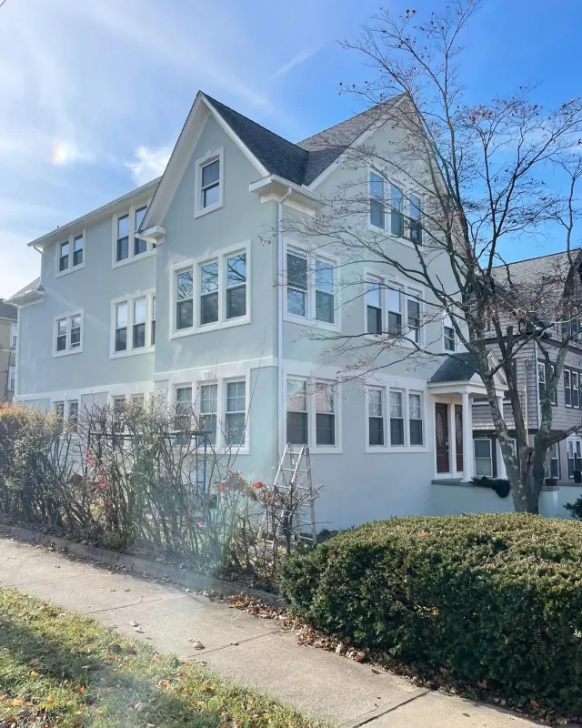

ExhibitsAnexos
See stucco exteriors, masonry and exterior work in progress.Mira exteriores de estuco, mampostería y trabajos exteriores en curso.
Project recordRegistro de proyectos
- Maple Hill FarmMaple Hill Farm
- Fairfield, CTFairfield, CT
- Traditional stucco.Estuco tradicional.
- Great Wolf LodgeGreat Wolf Lodge
- ConnecticutConnecticut
- EIFS for the hotel and water park.EIFS para el hotel y parque acuático.
- Hilton hotelHotel Hilton
- New London, CTNew London, CT
- Exterior restoration.Restauración exterior.
- Shelton apartment buildingEdificio de apartamentos en Shelton
- Shelton, CTShelton, CT
- Thin brick and stucco.Ladrillo delgado y estuco.
 Open Exhibit A in a larger viewAmpliar Anexo A
Open Exhibit A in a larger viewAmpliar Anexo A
 Open Exhibit B in a larger viewAmpliar Anexo B
Open Exhibit B in a larger viewAmpliar Anexo B


Open Exhibit C in a larger viewAmpliar Anexo C Open Exhibit D in a larger viewAmpliar Anexo D
Open Exhibit D in a larger viewAmpliar Anexo D
 Open Exhibit E in a larger viewAmpliar Anexo E
Open Exhibit E in a larger viewAmpliar Anexo E
 Open Exhibit F in a larger viewAmpliar Anexo F
Open Exhibit F in a larger viewAmpliar Anexo F
 Open Exhibit G in a larger viewAmpliar Anexo G
Open Exhibit G in a larger viewAmpliar Anexo G
 Open Exhibit H in a larger viewAmpliar Anexo H
Open Exhibit H in a larger viewAmpliar Anexo H